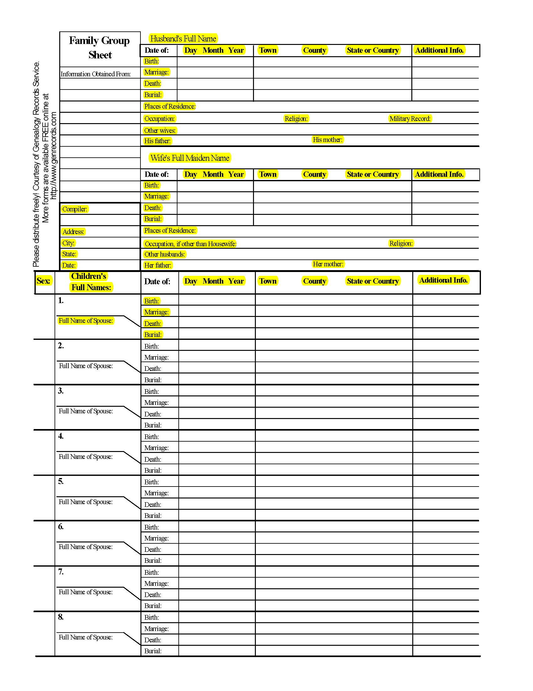

North Carolina State Library Sample Projects
Indexing Project Sample: News & Observer Index
Content to be made available:
Index to the Raleigh News & Observer Newspaper, which contains subject-based citations. Although content remains structured in a similar way across the years, the index was produced in the following varying formats:
- 1926-1974: ~193,000 unlined index cards (url)
- 1975-1976: Printed book (url)
- 1977-1992, excluding 1978-1981: Electronic database (url)
- 1978-1981: computer printout (2 different formats, not yet scanned)
Sample files included:
noi_cards_samples0001.jpg
noi_cards_samples0002.jpg
noi_book_samples0001.pdf
noi_book_samples0002.pdf
noi_printout_samples0001.jpg
noi_printout_samples0002.jpg
noi_printout_samples0003.jpg
noi_printout_samples0004.jpg
{kind=link}
{kind=link}
{kind=link}
{kind=link}
{kind=link}
{kind=link}
Goals of the project:
- Aggregate the index’s various formats in one location (done)
- Make the Index full-text searchable (done)
- Develop mechanism whereby volunteers can correct OCR’d text (done)
- Create a publicly accessible database with the index’s information in structured format
Minimal fields needed:
- Topic or Name (aka entry “title”)
- Article title*
- Newspaper issue date (YYYYMMDD)*
- Newspaper issue page*
- Image file name
- Transcriber user id
- Transcription date
*There may be more than one of these fields per image as some cards/pages have multiple articles relating to the card’s topic. So they’d have to be associated with each other, to keep the individual article citations together if there are more than one citation per image.
Maximal spec:
- Entry type (topical entry?/name entry?/see also? toggle field)
- See also (repeatable field for see also entries)
- Flag field (for transcribers to notify staff of an issue)
- Notes field (for staff)
- Review date (in case we end up reviewing transcriptions)
- Article URL (whereby we can provide a link to the article online should they ever be made freely available)
- Repeatable transcription user id/date, in case we want more than one transcription to help with accuracy
Indexing Project Sample: Family Group Sheets/Records
Content to be made available:
Genealogy family group sheets, submitted to our library. A family group sheet is general term for a form commonly used to organize basic information about an individual and his or her next of kin. More prevalent before genealogy computer programs, many of these typewritten or handwritten sheets have been donated to our library.
The forms generally have similar information, but are not always in the same strict format.
Sample files included:
{kind=link}
{kind=link}
{kind=link}
Goals of the project:
- Develop mechanism whereby volunteers can correct OCR’d text (done)
- Transcribe family group sheets without the accompanying generic form fields muddying up the OCR’d text (done)
- Preserve the structure a family group sheet provides, which can be lost through OCR’d text
- Create a publicly accessible database that aggregates the information found on those group sheets
Minimal fields needed:
See the sample simple family group sheet on the next page. All highlighted fields would be needed, as well as fields retaining the relationships between the data on the sheet.
Also:
- Image file name
- Transcriber user id
- Transcription date
The trick will also be outlying information sometimes found on the different iterations of family group sheet forms, like christening date, LDS church-related information, supplemental information for children, structured citation data. In ways, this will greatly mimic the genealogy software already available.
Maximal spec:
- Related to sheet (place for image file name(s) of sheets that describe family members related to the family members on current sheet)
- Provenance (place for library staff to include information related to who made the sheet or how the library received the sheet if available)
- Flag field (for transcribers to notify staff of an issue)
- Notes field (for staff, hidden from public view)
- Review date (in case we end up reviewing transcriptions)
- Repeatable transcription user id/date, in case we want more than one transcription to help with accuracy
- Data exportable to users in common genealogy computer formats (.ged, for example)

State Library of North Carolina Contact: (email redacted)